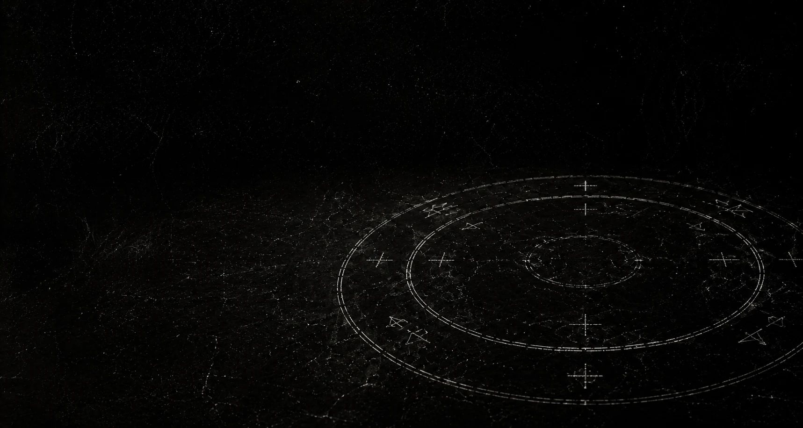

ÁLBUM III / AUSÊNCIA

Teologia dos Fracassos Afetivos em Cama de Solteiro
AUSÊNCIA / altar doméstico
“A cama vira altar. O sinal vira rito. A ausência cria rotina.”
O quase aprende a ocupar o quarto.
faixas
- 01Santo Errado
- 02Tarde Demais
- 03O Culto da Carne
- 04Lockdown (Terror Cult)
- 05Toque Fantasma
- 06Fracasso de Estimação
- 07Não Se Preocupa (Era Bituca)
- 08Cortesia do Medo
- 09Vinte e Três
- 10Quase Verdade
- 11Matéria Escura
- 12Para Onde Eu Fui?
- 13O Reino do Quase